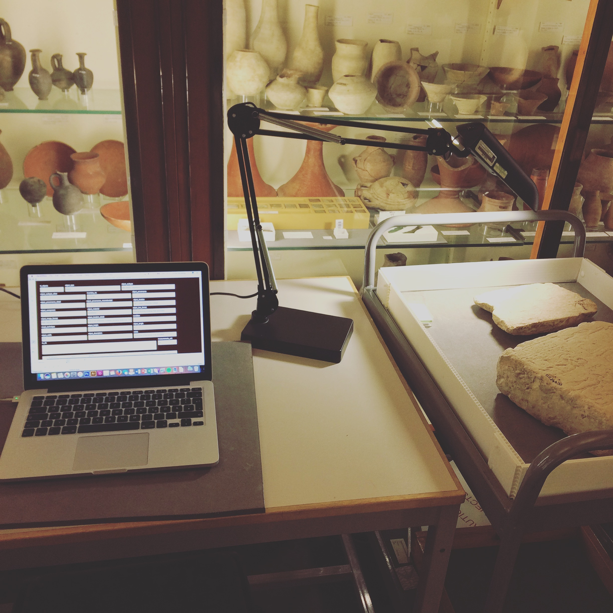

The Project
The searchable web-database is a result of the author’s dissertational project: Prosopographia Memphitica. Individuelle Identitäten und Kollektive Biographien einer königlichen Residenzstadt des Neuen Reiches at the Freie Universität Berlin, supervised by Univ.-Prof. Dr. Jochem Kahl (Freie Universität) and PD Dr. Dietrich Raue (Universität Leipzig) and funded by a Doctoral Fellowship at Excellence cluster TOPOI 264 (Research Group C-1: Deixies and Frames of References: Strategies of Perspectivation in Language, Text, and Image. The primary aim of the Prosopographia Memphitica Project is to attain a regional prosopography for the Memphite region of the second millennium BC, which shall shed new light not only on the identity of individuals, but on the reconstruction of personal connections within a historical network of people.
The Sources
The archaeological remains of the city of Memphis and its related necropoleis are located 18 km south of modern Cairo on today's west bank of the Nile. Although the scientific discussion about the site and its monuments forms an independent research focus, the archaeological legacy of the New Kingdom burial sites (1539–1077 BC) remained uninvestigated for a very long time. It was not until 1975 that the systematic documentation of tombs of the Memphite elite necropolis at Saqqara has been initiated by the Egypt Exploration Society in cooperation with the Rijksmuseum van Oudheden, Leiden. Since then several other fieldwork missions were able to unearth further New Kingdom burial sites. As a result, the region known as Memphite necropolis covers an area of about 40 sqm and reaches from Giza in the North to Dahschur in the South.

fig. 1: Map of the Memphite region with notification of New Kingdom burial sites. © Anne Herzberg-Beiersdorf.
Altogether 84 monumental tomb structures, whose physical existence is known or has been recorded in the past, have been identified so far. They eventually revealed numerous prosopographic data. Relevant texts and inscriptions are to be found not only on the walls of the tombs, but also on different types of objects that were part of the tomb’s original decoration or equipment.
First Steps
As a first step towards the aim the compilation of prosopographical data has begun at the outset of the project by incorporating all data entries of a so far unpublished card box collection that has been compiled by Dietrich Raue since the 1990s; it comprised 1,121 individuals: 878 male and 243 female persons. In the course of this first phase the data has been supplemented within formation from preliminary reports and final publications as well as additional relevant studies and collection catalogues. Monuments and artefacts from altogether 114 museums and collections all over the world have been included to the data collection.

fig. 2: Recording and collating original objects in the Petrie Museum collection © Anne Herzberg-Beiersdorf.
The Database
Due to the increasing amount of relational data a complex relational database model has been created using PostgreSQL. The relational model of the database management is m:n and 1:n. A n:m relation is used to denote a many-to-many relationship, where m-objects on the one side are related to n-objects on the other side. In addition, 1:n relations refer to a one-to-many relationship, that means 1-object on the one side can be related to n-objects on the other side. The high standardisation of the data form and structure enables an easy access as well as the application of external analysis software and visualisation tools, such as the network analysis software Gephi or Jupyter notebook, which is an OpenSource interactive computational environment (IPython) for creating analyses and visualisations from existing data libraries.
The data collection currently comprises 2,350 persons, 1,662 objects, and 980 titles, which are connected by 25,324 relations. This data set forms an amount of prosopographical data that has not yet been processed for New Kingdom Egypt. To ensure the scientific transparency of the research argumentation, but also continuity of data editing respectively recording of new data, data storage and long-term provision of research results in a structured file format (JSON), the database has been published as a citable web publication.
All data records are subject to revision due to ongoing research. If you have additional information regarding individual data entries, or have noticed an error, please
 contact us
contact us
Publications
• Herzberg, A. 'Prosopographia Memphitica. Individuelle Identitäten und Kollektive Biographien einer Residenzstadt des Neuen Reiches', in: Zeitschrift für Ägyptische Sprache und Altertumskunde, Beihefte (forthcoming).
• Herzberg, A. 'Prosopographia Memphitica (ProM) – A Web-Database of New Kingdom Prosopographic Data from Memphis', in: BÁRTA, M.; COPPENS, F. and KREJČÍ, J. (eds), Abusir and Saqqara in the Year 2020 (forthcoming).
• Herzberg, A. 'Towards a Memphite Prosopography of the New Kingdom – Promises and Pitfalls of Historical Network Analysis', BÁRTA, M. and DULÍKOVÁ, V. (eds), Addressing the Dynamics of Change: Complex Network Analysis in Ancient Egypt, Prague 2020, 105–136. ➯ pdf version
• Herzberg, A. 'Prosopographia Memphitica – Analyzing Prosopographical Data and Personal Networks from the Memphite Necropolis', STARING, N., TWISTON DAVIES, H. and WEISS, L. (eds), Perspectives on Lived Religion: Practices – Transmission – Landscape, Papers on Archaeology of the Leiden Museum of Antiquities 21, Leiden 2019, 39–58. ➯ pdf version
• Herzberg, A. 'Das Uschebti H 219 im Badischen Landesmuseum und die Chronologie der memphitischen Bürgermeister der 19. Dynastie‘, in: ZÄS 146.2 (2019), 34–59.
• Herzberg, A. 'Prosopographische Netzwerkanalyse – Promises and Pitfalls', Posterpräsentation im Rahmen der 51. Ständigen Ägyptologenkonferenz (SÄK) in Basel – Ägyptologie und Methodik: Potenzial und Prioritäten (5.-7.7.2019). ➯ pdf version
• Herzberg, A. 'Relief aus dem Grab eines Hohepriesters des Ptah in Memphis', in: SEYFRIED, F. and JUNG, M. (eds), China und Ägypten – Wiegen der Welt, München 2017, 160–161.
• Herzberg, A. 'Grabstele des Ry und seiner Frau Maja', in: SEYFRIED, F. and JUNG, M. (eds), China und Ägypten – Wiegen der Welt, München 2017, 198–199.
• Herzberg, A. 'Prosopographia Memphitica. Individual Identitites and Collective Biographies from a Royal Residence', BERTI, M. and NAETHER, F. (eds), Altertumswissenschaften in a Digital Age: Egyptology, Papyrology, and Beyond. Proceedings of a conference and workshop in Leipzig, November 4–6, 2015, Leipzig 2016. ➯ pdf version
• Herzberg, A. 'Zu vier memphitischen Grabreliefs in der Sammlung des Ägyptischen Museums Georg Steindorff der Universität Leipzig', ZÄS 143.1 (2016), 34–59.
Icons by Icons8